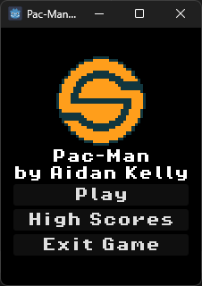
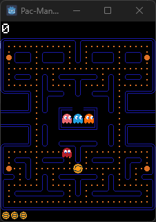
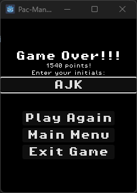
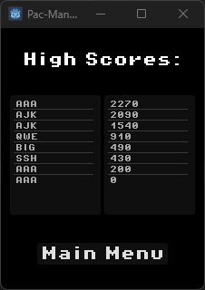

Today was a professional development day at work for me, so I've been trying to finish off my Pac-Man clone.
   Spent a lot of time working on implementing the UI flow between the different menus. I had some experience with this from my previous Asteroids clone project.
The hardest feature to implement today though was the score board. I utilized the Godot FileAccess class to handle the file I/O, which was something I hadn't tried yet in Godot. The built in methods man it ridiculously easy. However, originally I had tried to create my own class in Godot to store the score records. Godot wasn't playing nice, and currently doesn't have structs built in. After quite a bit of debugging, I resigned to representing the score records as Dictionaries which worked without issue.
I'm currently trying to revamp my portfolio as being in the workforce for the past four years has definitely shifted my focus away from it. That doesn't mean that I haven't been working on projects though.
Lately at work I've been working on learning video game development using Godot as my game engine. While I haven't made anything major, I've been starting at the beginning, learning the basics by recreating classic favourites like Asteroids and Pac-Man.
Going forwards I hope to use this blog as a place to store what I learn during this process. I'll share updates on progress and discuss any problems that I run into. I look forward to posting more in the future.